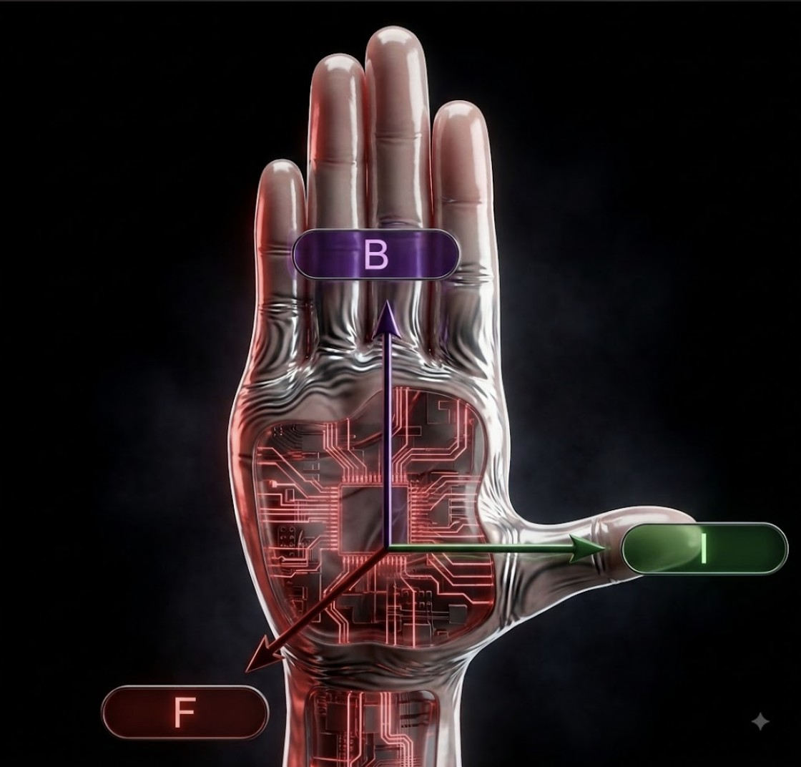

通電導線會受到磁力
把通電導線放進外加磁場，而且電流與磁場互相垂直時，導線會受到磁力。
- 磁場 B：由 N 極指向 S 極。
- 電流 I：用 ⊙ 穿出、⊗ 穿入表示。
- 磁力 F：一定同時垂直於電流與磁場。
右手開掌定則
伸出右手，把大拇指與其餘四指互相垂直：
- 大拇指：代表電流方向 (I)。
- 伸直的四指：代表磁場方向 (B)（由 N 指向 S）。
- 掌心推出的方向：就是導線的受力方向 (F)！
先認清 B 與 I，再用右手驗證 F；不要在腦中旋轉整張圖。

解鎖右手開掌定則，透視馬達旋轉的物理奧秘。
把通電導線放進外加磁場，而且電流與磁場互相垂直時，導線會受到磁力。
伸出右手，把大拇指與其餘四指互相垂直：

若磁場方向是「由東向西」，導線的電流方向是「由南向北」，導線會往哪個方向受力？
四指指向西方，大拇指指向北方。這時候你的掌心是朝上還是朝下？
掌心朝上，導線受力方向為向上（離開地面）。
A 導線的磁場作用在 B 導線，使 B 受力朝向 A；B 也用相同方式影響 A。
電子向右射入垂直穿入畫面的均勻磁場（⊗），軌跡開始向下彎。磁力永遠垂直於運動方向，只改變方向，不直接改變速率。
若兩條平行導線的電流方向相反，兩條導線會互相吸引，還是互相排斥？
把其中一條導線的電流翻轉，再用右手開掌定則判斷兩邊的受力。
互相排斥。同方向電流相吸；反方向電流相斥。
電子向右進入垂直穿入畫面的有限磁場，最初會往上彎，還是往下彎？離開磁場後如何運動？
先把它當正電荷用右手判斷，再把受力方向反轉；磁力永遠和速度垂直。
電子最初受力向下，在磁場內沿圓弧運動；離開磁場後不再受磁力，沿切線等速直線向左。
馬達就是把「電能」轉換成「動能（旋轉）」的機器，它的內部主要由四大核心零件組成：
直流電動機中的「電刷」，為什麼通常使用石墨（碳）來製作，而不是用銅或鐵？
電刷必須一直摩擦高速旋轉的集電環。石墨除了能導電，在物理特性上還有什麼優點？
因為石墨具有導電性好，且質地較軟具有潤滑作用，能減少摩擦阻力與集電環的磨損。
當線圈呈水平時，我們套用右手開掌定則：
注意看動畫！當線圈轉到垂直面時：
如果我們把「半圓形的集電環」，換成兩個完全沒有缺口的「完整圓環」，馬達還能順利旋轉嗎？
完整圓環無法改變線圈內的電流方向。當線圈轉過半圈後，原本向上的力會變成向下，這樣會發生什麼事？
不能旋轉。線圈會在垂直位置附近來回擺盪卡死，無法持續朝同一方向旋轉。
不論是電風扇、四驅車、還是特斯拉的電動車，要提升馬達的轉速與力量，物理原理完全相同：